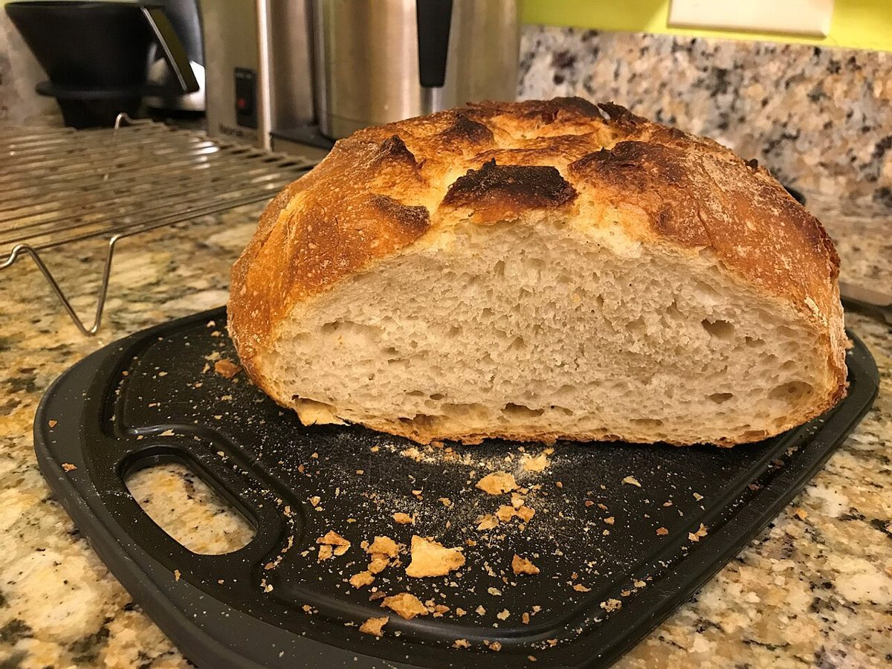

START LINE
パン工房かばホームページ(試作サンプル)
五本のレーンに分けて、お店の情報を順番にご案内します。確認できている情報は所在地・電話・Instagramです。そのほかは準備中です。
 イメージ写真
イメージ写真START LIST
出走表
お店について、いま確認できていること。黄色のゼッケンの項目は準備中です。
| 1屋号 | パン工房かば |
|---|---|
| 2所在地 | 〒754-1292 山口県山口市阿知須10509-35 |
| 3電話 | 0836-65-2559 |
| 4Instagram | @ajisu.bakery_kaba |
| 5営業時間・定休日 | 準備中 |
| 6メニュー・価格 | 準備中 |
| 7予約・駐車場 | 準備中 |
PHOTO FINISH
焼きあがりの質感を、ならべて
フリー素材のイメージ写真です。お店のものではありません。
